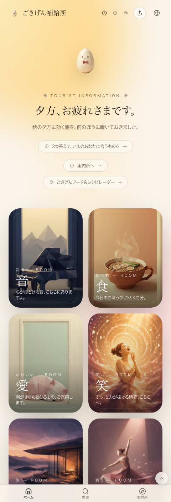
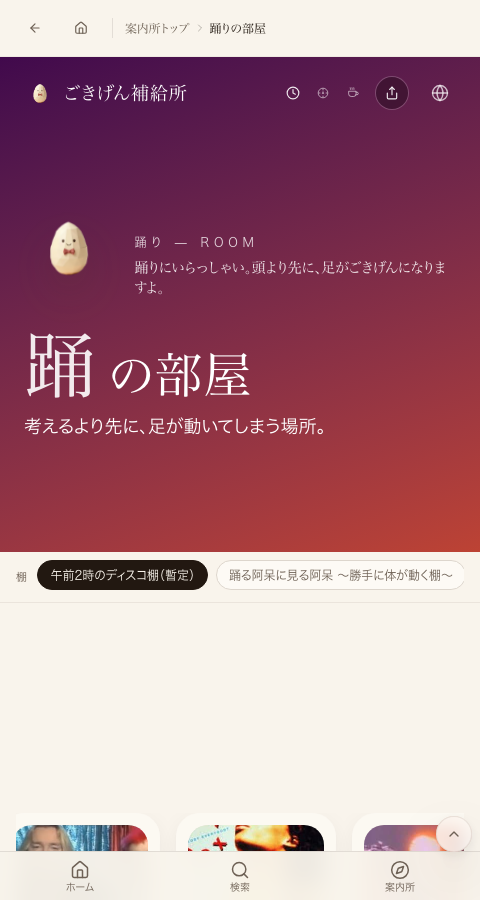

← 進捗表に戻る
共有資料の一覧
／ 確認ページ #34415 踊りの部屋｜隠し扉ではなく大きくちゃんとした扉になっているか
#34415 踊りの部屋｜隠し扉ではなく大きくちゃんとした扉になっているか
2026-10-04 実装・main合流・本番(GitHub Pages)反映まで実測確認
2026-08-01夜『隠し扉ではなく、大きくちゃんとした扉として作ってください』という要望に対し、踊り(dance)の部屋はホームの表の扉6枚(音・食・愛・笑・旅・踊)の1枚として、他の扉と全く同じ大きさ・同じコンポーネント(Door.tsx、3:4比率の専用アートワーク)で本番に出ている。秘ボタンの隠し扉(SecretDoor.tsx)とは別物で、ホーム画面に常時表示される表の扉。
② 数字
200
本番ホーム(/) HTTPステータス
200
本番/world/dance HTTPステータス
6枚中1枚
踊りはmusic/food/cute/laugh/travelと並ぶ表の扉
本番スクリーンショット（2026-10-04 実機取得）
ホーム下部：音・食・愛・笑・旅・踊が同じ扉として並ぶ

踊りの部屋ページ(本番)

④ 押せるリンク
本番ホーム
https://joy-relief-station.lovable.app/
踊りの部屋(本番)
https://joy-relief-station.lovable.app/world/dance
⑤ 何をどう確かめたか
確認項目
結果
ホームに踊りの扉が音・食・愛・笑・旅と同じ大きさで出ている
yes
踊りの扉が秘密の隠し扉(SecretDoor)ではなく表の扉(Door.tsx)である
yes
踊りの部屋ページが開き棚・動画が入っている(空でない)
yes
← 進捗表に戻る